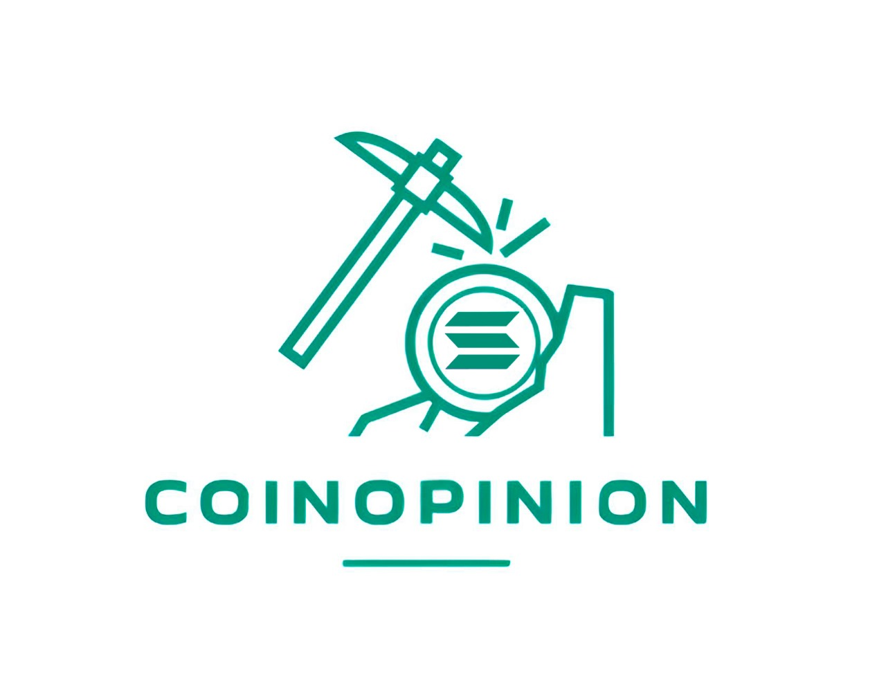

"Coin-Opinion" es una aplicación innovadora diseñada para brindar a las empresas información valiosa sobre el siempre cambiante mundo de las criptomonedas y las tendencias financieras. A través de encuestas en las que los usuarios participan activamente, facilitamos la recopilación de datos esenciales para cualquier empresa. Como muestra de agradecimiento, los usuarios reciben una parte del valor de criptomonedas, asegurando así una participación informativa y gratificante.
En Coin-Opinion, te ofrecemos la oportunidad de participar en encuestas relacionadas con el mundo de las criptomonedas y las finanzas. Tu opinión es valiosa para las empresas que desean comprender mejor este mercado en constante evolución.
Cuando completas una encuesta, no solo contribuyes con información relevante, sino que también recibes una recompensa en forma de criptomonedas. Es nuestra manera de agradecerte por tu tiempo y esfuerzo.
Si estás interesado en compartir tus opiniones y ganar criptomonedas al mismo tiempo, ¡te animamos a unirte a nuestra plataforma! Regístrate hoy mismo y comienza a participar en nuestras encuestas.
Registrarse